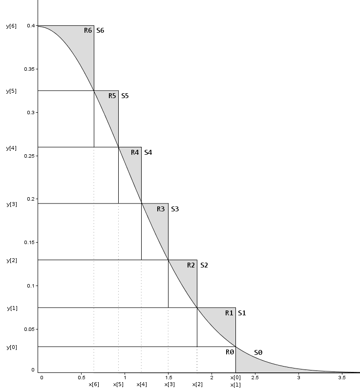

Random number generator
Random number generator $($RNG$)$ is a method or device that generates ideally unrelated numbers through some algorithms, physical signals, environmental noise, etc. Throwing coins, throwing dice, and shuffling cards are common ways of generating random numbers in life. The hardware random number generator $($HRNG$)$ can be a true random number generator, which can generate a random number according to the function of the current value of a specific physical environment attribute, and the value is constantly changing in a way that it is almost impossible to model. However, the pseudo-random numbers on most computers are not true random numbers, but a series of numbers with a relatively large repetition period, which are generated according to a certain algorithm and seed value.

Normal distributed RNG
This post introduces multiple ways to generate random numbers which are normally distributed from uniformly distributed random variables, including Central limit theorem $($CLT$)$, inverse cumulative distribution density $($CDF$)$, acceptance-rejection sampling, Box-Muller algorithm and Ziggurat algorithm.
Central limit theorem
Central limit theorem $($CLT$)$ is a probability theory, which states that under appropriate conditions, the mean values of a large number of independent and identically distributed ((i.i.d.)) random variables with finite variance are properly standardized and then converge to a normal distribution according to the distribution. This set of theorems is the theoretical basis of mathematical statistics and error analysis, and points out the condition that the sum of a large number of random variables approximately obeys a normal distribution.
Assume that (X_1, X_2, …, X_n) are (i.i.d.) random variables, with the mean as $\mu$ and variance $\sigma^2$, then there is a random variable (Z_n) has the following form:
$$Z_n = \frac{X_1 + X_2 + … + X_n - n\mu}{\sigma \sqrt{n}} ,$$
which has a asymptotic distribution as standard normal distribution (N(0,1)). That is when n $\rightarrow \infty$,
$$P(\frac{X_1 + X_2 + … + X_n - n\mu}{\sigma \sqrt{n}}\leq x) \sim \frac{1}{2\pi} \int_{-\infty}^{x} e^{-\frac{t^2}{2}} dt $$
in other words, the sum of independent and identically distributed random variables is normally distributed. However, it might not be always true, like the normalized (i.i.d.) Cauchy distributed random variables is standard Cauchy distributed, because the Cauchy distribution has no mean, variance or higher moments defined. It is a different topic which will not be explained in detailed here. But it is still safe to generate normally distributed random numbers when the (i.i.d.) random variables are uniformly distributed.
import matplotlib.pyplot as plt
import matplotlib
import scipy.stats as stats
import numpy as np
import time
font = {'weight': 'bold','size': 28}
matplotlib.rc('font', **font)
#
def getNormal(SampleSize,n):
result = []
for i in range(SampleSize):
# Deploy CLT，[0,1) uniform distribution with mean as 0.5, variance as 1/12
iid = (np.mean(np.random.uniform(0, 1, n))-0.5)*np.sqrt(12*n)
result.append(iid)
return result
# Generate 10000 numbers, check their distribution
# Select different n to check the performance
SampleSize = 10000
N = [1, 10, 100, 1000, 10000, 100000]
plt.figure(figsize=(30, 20))
subi = 230
# Plot sampling distribution
for index,n in enumerate(N):
time0 = time.time()
subi += 1
plt.subplot(subi)
normal = getNormal(SampleSize, n)
plt.title("T={0}s, S={1}, P={2}".format(round((time.time()-time0),2), round(stats.normaltest(normal).statistic,2), round(stats.normaltest(normal).pvalue,2)))
plt.hist(normal,np.linspace(-4,4,81), density = True, label="n={0}".format(n))
plt.legend()
plt.savefig('CLT-normal.jpg', dpi=200)
plt.show()
In the following histogram figures:
- T: sampling time
- S: the statistic, $S=s^2 + k^2$, where (s) is the z-score returned by skewtest and (k) is the z-score returned by kurtosistest
- P: p-value, a 2-sided chi squared probability for the hypothesis test
The closer the statistic is to 0, the better it indicates that the data fits the standard normal distribution better. If the P value is greater than the significance level, which is usually 0.05 , accepting the null hypothesis, and it is judged that the population of the sampling obeys the normal distribution.
As shown above, when (n=1), it is actually a uniform distribution. As (n) gradually increases, the distribution of random numbers generated by CLT is getting closer and closer to the normal distribution. Therefore, it is feasible to use the central limit theorem to forcefully generate random numbers that follow the normal distribution. However, the speed of generating a normal distribution in this way is very slow, because it is very inefficient to generate several (i.i.d.) random variables.
Inverse cumulative distribution function
Not only CLT is inefficient, but also its RNG is too rough to be used in real life, even after generating over 100,000 (i.i.d.) random variables above. Then, theoretical inversion of cumulative distribution function $($CDF$)$ comes to help with accuracy. Suppose (u = F (x)) is a CDF of (x), (F^{-1}(u)) is its inverse function. Then, if (X) is a random variable that has standard uniform distribution ~ U((0, 1)), then (F^{-1}(X)) has the distribution given by the cumulative distribution function (F). For example, in order to generate the random numbers with exponential distribution, which has the CDF as (F(x)) (= 1-e^{-\lambda x}) and the inverse CDF as (F^{-1}(x))(=-\frac{ln(1-x)}{\lambda}), only need to generate random variables following uniform distribution ~ (U(0, 1)) and apply the inverse CDF, then the output random numbers are exponential distributed.
Same for the normal distributed RNG, which has the CDF as (\frac{1}{2}(1+erf(\frac{x-\mu}{\sigma \sqrt{n}}))), where (erf(z)) (= \frac{2}{\sqrt{\pi}}\int_{0}^{z}e^{-t^2} dt), although it is difficult to access the analytical form of the inverse CDF of normal distribution, the numerical form of this inverse function is available. (R) language has the package of (qnorm), while the (Excel) has the function (NORMINV). And in the (Python), (SciPy.stat) provides (norm.ppf):
import matplotlib.pyplot as plt
import numpy as np
from scipy.stats import norm
import scipy.stats as stats
import time
font = {'weight': 'bold','size': 25}
matplotlib.rc('font', **font)
# Sampling function by inverse CDF
def getNormal(SampleSize):
iid = np.random.uniform(0,1,SampleSize)
result = norm.ppf(iid)
return result
# Generate 10000000 numbers, check their distribution
SampleSize = 10000000
time0 = time.time()
normal = getNormal(SampleSize)
plt.figure(figsize=(20, 15))
plt.title("T={0}s, S={1}, P={2}".format(round((time.time()-time0),2), round(stats.normaltest(normal).statistic,2), round(stats.normaltest(normal).pvalue,2)))
plt.hist(normal,np.linspace(-4,4,81),density = True)
plt.savefig('invCDF-normal.jpg', dpi=200)
plt.show()Box-Muller algorithm
Although the above CLT and inverse CDF methods are convenient and easy to understand, they are too inefficient and impractical, only with theoretical importance. So how to generate a normal distributed RNG in practice?
Box-Muller algorithm, which only uses some elementary mathematical functions, was the standard normal RNG for a long time. Recall that in the inverse CDF, the analytical form of normal CDF exists theoretically in one-dimension. Box-Muller method extends it to two-dimensions, by which the joint normal CDF has the inverse function in analytical form. Assume that (U_1, U_2) following uniform distribution ~ (U(0, 1)), and the joint probability density function (PDF) of ((U_1, U_2)) is (f(u_1, u_2))(= 1), where (0 \leq u_1, u_2 \leq 1). Then if there is:
\[
\begin{cases}
u_1 = g_1(x, y) \\
u_2 = g_2(x, y)
\end{cases}
\]
where exists the inverse transformation and the 1st order partial derivative:
\[
\begin{cases}
x = h_1(u_1, u_2) \\
y = h_2(u_1, u_2)
\end{cases}
\]
Set (|J|) is the determinant of the Jacobian matrix, which is non-zero:
\[|J| =
\begin{vmatrix}
\frac{\partial u_1}{\partial x} & \frac{\partial u_1}{\partial y} \\
\frac{\partial u_2}{\partial x} & \frac{\partial u_2}{\partial y}
\end{vmatrix} \neq 0
\]
Based on the joint (PDF) transformation and (PDF) of uniform distribution:
$$f_{X,Y}(x,y) = f_{U_1,U_2}(g_1(x,y),g_2(x,y))\lvert{J}\lvert = \lvert{J}\lvert,$$
Now, let desired random variables (X, Y) have the following relationship with uniformly distributed random variables (U_1, U_2):
\[
\begin{cases}
x = h_1(u_1, u_2) = \sqrt{-2ln(u_1)}cos(2\pi u_2) \\
y = h_2(u_1, u_2) = \sqrt{-2ln(u_1)}sin(2\pi u_2)
\end{cases}
\]
then,
\[
\begin{cases}
u_1 = e^{-\frac{x^2+y^2}{2}} \\
u_2 = \frac{1}{2\pi}arctan(\frac{y}{x})
\end{cases}
\]
where the determinant of the Jacobian matrix:
$$\begin{eqnarray}
|J|
&=&
\begin{vmatrix}
\frac{\partial u_1}{\partial x} & \frac{\partial u_1}{\partial y} \\
\frac{\partial u_2}{\partial x} & \frac{\partial u_2}{\partial y}
\end{vmatrix} \\\
&=&
\begin{vmatrix}
-x e^{-\frac{x^2+y^2}{2}} & -y e^{-\frac{x^2+y^2}{2}} \\
-\frac{y}{2\pi (x^2+y^2)} & \frac{x}{2\pi (x^2+y^2)}
\end{vmatrix} \\\
&=&
-(\frac{1}{2\pi}e^{-\frac{1}{2}x^2})(\frac{1}{2\pi}e^{-\frac{1}{2}y^2}),
\end{eqnarray}$$
which is the joint (PDF) of two independent normal distributed random variables. Thus, if (i.i.d.) (U_1, U_2) follow uniform distribution ~ (U(0, 1)), by the transformation of (h_1(u_1, u_2)) and (h_2(u_1, u_2)), the output random variables are normally distributed.
import matplotlib.pyplot as plt
import matplotlib
import scipy.stats as stats
import numpy as np
import time
font = {'weight': 'bold','size': 25}
matplotlib.rc('font', **font)
# Sampling function by Box-Muller
def getNormal(SampleSize):
iid = np.random.uniform(0,1,SampleSize)
normal1 = np.cos(2*np.pi*iid[0:int(SampleSize/2)-1])*np.sqrt(-2*np.log(iid[int(SampleSize/2):SampleSize-1]))
normal2 = np.sin(2*np.pi*iid[0:int(SampleSize/2)-1])*np.sqrt(-2*np.log(iid[int(SampleSize/2):SampleSize-1]))
return np.hstack((normal1,normal2))
time0 = time.time()
SampleSize = 10000000
normal = getNormal(SampleSize)
# Plot sampling distribution
plt.figure(figsize=(15,10))
plt.title("T={0}s, S={1}, P={2}".format(round((time.time()-time0),2), round(stats.normaltest(normal).statistic,2), round(stats.normaltest(normal).pvalue,2)))
plt.hist(normal,np.linspace(-4,4,81), density = True)
plt.savefig('box_muller_hist.jpg', dpi = 200)
plt.show()Actually, with this better performance in sampling, the Box-Muller algorithm was the mainstream normal distributed RNG in popular numerical software, such as Matlab, until the appearance of Ziggurat algorithm, which would be explained in the later part.
Acceptance-Rejection sampling
Although the Box-Muller algorithm is better in efficiency than the traditional RNG methods and is one widely used sampling method in industry, it uses trigonometric and logarithmic functions, which are still relatively time-consuming. How about not to use these “complex” functions?
Acceptance-Rejection method is one of Monte Carlo methods, which is a basic technique used to generate observations from a given probability distribution based on the accpetance/rejection of random variable. Actually, the rejection sampling has the similar idea as obtaining the density function of a random variable onto a board and throwing darts at it, in which the area of target board is proportional to the number of darts within the certain boundary. Rejection sampling requires one proposal probability distribution (g(x)), which is easy to sampling from, and one constant (M), which scales the proposal distribution larger than the desired distribution in overall sampling space. The proof of validation of acceptance-rejection sampling can be found here.
How the acceptance-rejection sampling works:
- Sample a point on the x-axis from the uniform distribution, which is the proposal distribution.$($making the sampling board as rectangle, can also use other easily sampling proposal distributions$)$
- Draw a vertical line at each sampling x-position, up to the maximum y-value of the (PDF) of the uniform distribution.
- Sample uniformly along this vertical line. If the sampled value is greater than the value of the desired distribution at this vertical line, reject this sampled x-value and return to the first step; otherwise store this x-value as one successful sampling from the desired distribution then return to the first step.
# necessary package
import matplotlib.pyplot as plt
import matplotlib
import scipy.stats as stats
import numpy as np
import time
font = {'weight': 'bold','size': 22}
matplotlib.rc('font', **font)
# target sampling distribution
def normal_0_1(x):
return (1/np.sqrt(2*np.pi))*np.exp(-x**2/2)
# acceptance/rejection sampling
def rejection_sampling(function, num_samples, xmin, xmax, ymax = 1):
x = np.random.uniform(low = xmin, high = xmax, size = num_samples)
y = np.random.uniform(low = 0, high = ymax, size = num_samples)
flag = (y < function(x)).astype(int)
return x, y, flag
# xrange
t = 4
# sampling times
n_trials = 10000000
# (x,y) of normal_0_1 pdf curve for validation
time0 = time.time()
x_pdf = np.linspace(-t, t, 1000)
y_pdf = normal_0_1(x_pdf)
# sampling (x,y)
x_sample, y_sample, flag = rejection_sampling(normal_0_1, n_trials, -t, t)
# collect qualified (x)
x_hist = []
for i in range(len(x_sample)):
if flag[i]==1:
x_hist.append(x_sample[i])
# plot pdf curve
plt.figure(figsize=(15,10))
plt.plot(x_pdf, y_pdf, label = "f(x) of N(0,1)")
# plot histogram of sampling
plt.title("T={0}s, S={1}, P={2}".format(round((time.time()-time0),2), round(stats.normaltest(x_hist).statistic,2), round(stats.normaltest(x_hist).pvalue,2)))
plt.hist(x_hist,np.linspace(-4,4,81), density = True, label = "histogram of qualified samples")
# save figure
plt.legend(loc="upper left", fontsize=15)
plt.savefig('Rejection_hist.jpg', dpi = 200)
plt.show()This algorithm can also be used to sample from the area under any curve $($finite function’s integral$)$, regardless of whether the function can be integrated to 1. But the sampling efficiency is still as poor as the first two sampling methods and slower than the Box-Muller algorithm.
Ziggurat algorithm
If check the validation proof of acceptance-rejection sampling carefully, the acceptance rate of original acceptance-rejection sampling is really low, which depends on the scaling magnitude (M) between proposal probability function and the desired probability function. And large scaling magnitude means large proportional sampling observations are rejected, especially for the probability function like normal distribution, which has a long tail in low frequency region. And the Ziggurat algorithm can improve the efficiency of rejection sampling a lot by “customizing” the proposal probability function to curve it closer to the desired density function $($in the other word, (M) is not the same constant everywhere$)$.
As shown in the diagram above, the secret of high efficiency of Ziggurat algorithm is to choose an optimal form of proposal function (g(x)). Multiple rectangles stacked together ensures that the shadow part $($rejection region$)$ is always small, which increases acceptance rate and makes sampling process efficiently.
import zignor
import scipy.stats as stats
N = 10000000
time0 = time.time()
x = zignor.randn(N)
plt.figure(figsize=(15,10))
plt.title("T={0}s, S={1}, P={2}".format(round((time.time()-time0),2), round(stats.normaltest(x).statistic,2), round(stats.normaltest(x).pvalue,2)))
plt.hist(normal,np.linspace(-4,4,81), density = True)
plt.savefig('ziggurant_hist.jpg', dpi = 200)
plt.show()Random number generator introduction: https://en.wikipedia.org/wiki/Random_number_generation
Box-Muller algorithm: https://en.wikipedia.org/wiki/Box%E2%80%93Muller_transform
Ziggurat algorithm: https://en.wikipedia.org/wiki/Ziggurat_algorithm
Ziggurat algorithm code: https://github.com/jameslao/zignor-python